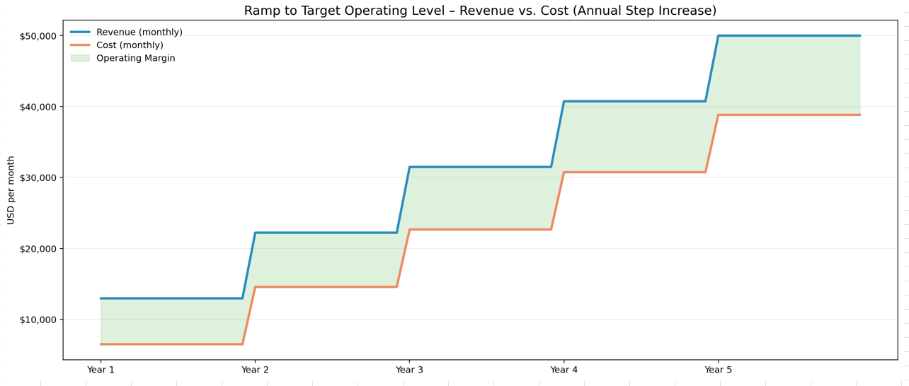
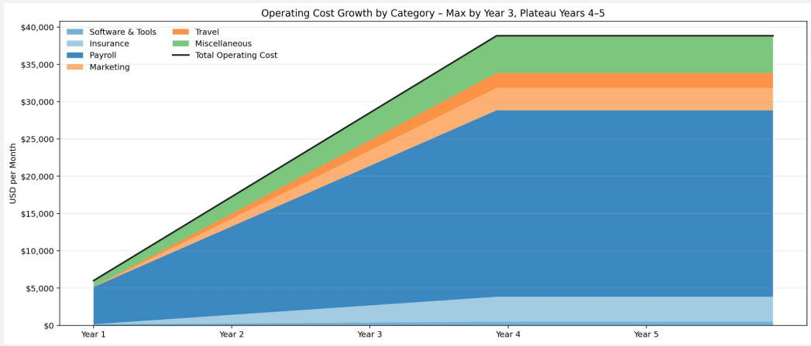
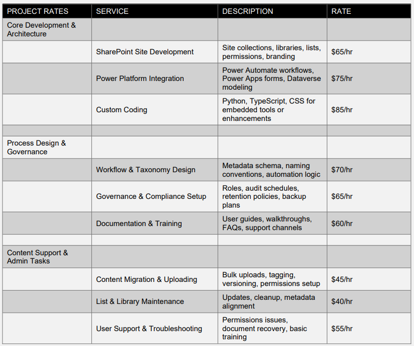
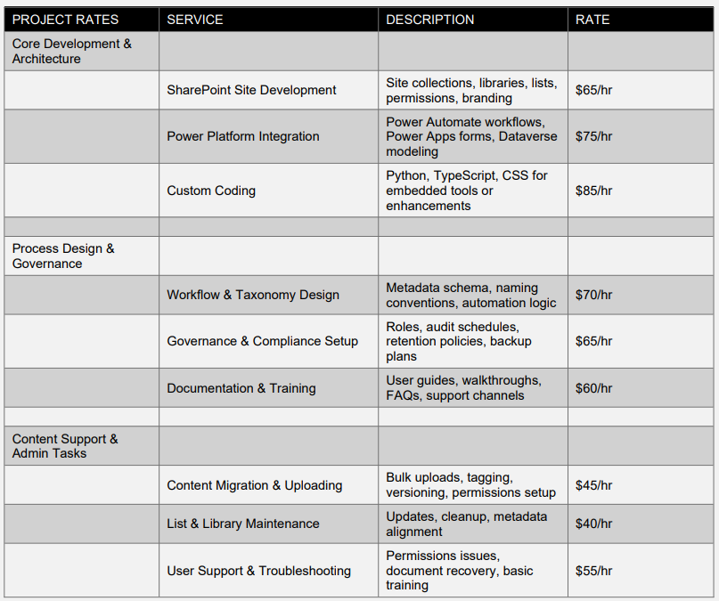

Discrete Development LLC
3 Year Business Plan and Strategic Roadmap
3-year Business Plan
Version: Combined
Date: February 2026
Executive Summary
Discrete Development LLC designs and implements systems that stay aligned with how work gets done. We serve small and medium-sized businesses that need clarity, adaptability, and long-term stability in their operational tools. Our approach emphasizes observation before action, intentional simplicity, and solutions that evolve naturally with the organizations they support. By combining the Microsoft ecosystem with custom development, we deliver systems that reduce drift, improve workflow reliability, and support sustainable growth.
Founding Principle
Discrete Development exists to build systems—and a business—that operate in balance. Work should support people, not extract from them. Our goal is not to maximize profit at any cost, but to create sustainable value through clarity, respect, and honest alignment with how work gets done. We choose long‑term relationships over short‑term gain, contribution over competition, and integrity over scale. Success is measured by stability, usefulness, and the well being of the people we serve and the people we work with.
Mission
To design systems that remain aligned with real‑world work, supporting clarity, adaptability, and long‑term usefulness.
Vision
A future where business systems evolve naturally with the organizations they support, eliminating drift and restoring clarity to everyday work.
Purpose
Across more than 30 years of experience, one pattern stands out: systems are rarely designed around how work is done. They reflect how work used to be done, or how someone wished it would be done. Today, processes evolve continuously—“finished” is elusive. The best systems are those that stay aligned with reality.
By examining a company’s history and core processes, patterns emerge that reveal opportunities for periodic drift alignment. We design systems with adjustment characteristics built in, allowing them to evolve naturally as work evolves.
To reach the desired future state, we must first understand the present state with precision. Our purpose is to implement solutions that meet today’s requirements while remaining adaptable to tomorrow’s change. By grounding design in purpose and learning from history, we deliver systems built for long‑term use, not short‑term compliance.
Core Values & Philosophy
Philosophy Statement
We design systems that respect how work is done and the people who do it. Our approach begins with understanding before action, ensuring solutions are robust, humane, and aligned. We refuse to impose templates that distort reality; instead, we build precisely what is needed so clients are never handed a handicap.
Clarity
We maintain clarity of purpose by holding a clear mental image of the desired outcome and continuously evaluating whether our efforts move us closer to it. Complexity is tempting but often misleading; when work becomes overly complex, we pause, reassess, and realign.
Integrity
Integrity is alignment. What we say, document, and deliver remains consistent across environments and circumstances. Strong foundations endure, and every interaction contributes to that foundation.
Continuous Growth
We learn continuously—individually and within the systems we build. Each iteration reveals new insight. We adopt new methods when they serve the purpose, guided by curiosity and disciplined experimentation.
Empathy
We listen first. Trust is built through patience, understanding, and shared perspective.
Respect
We value diverse viewpoints and respond thoughtfully rather than react impulsively.
Guiding Principles
Purpose Above All
Every solution begins with real needs. Systems are vessels that sustain and expand those solutions. When a system proves reliable, it naturally grows to replace failing systems around it.
Respect for Original Intent
We begin by understanding the original intent of a system before extending it. Expansion is approached thoughtfully, balancing new requirements with existing design boundaries.
Our Nature, Not a Goal
Our values are not aspirations—they define how we operate today.
Client‑Centered Understanding
We begin each engagement without assumptions or constraints, ensuring solutions reflect real needs rather than imposed structures.
We design systems that support users without imposing unnecessary structure, allowing tools to integrate naturally into existing workflows. Emphasis is placed on modularity, documentation, and clear interfaces so solutions can evolve without breaking as conditions change.
Competitive Landscape
Our competitors include MSPs, template‑driven Power Platform consultants, and custom development firms. While we share a market category, we are not in the same business. MSPs often prioritize volume over depth, and template‑based consultants impose rigid structures that fail to reflect real workflows. Custom dev shops may deliver powerful systems but lack ongoing alignment and operational fidelity.
Discrete Development operates from a different foundation. Performance is not our inspiration—it is the natural result of returning to purpose, honoring original intent, and building only what is needed. Our methodology emphasizes clarity, restraint, and a lean embodiment of the client’s true workflow. By aligning systems with how work gets done, we achieve reliability and long‑term stability without excess, drift, or unnecessary complexity.
Services & Value Propositions
What Makes Us Different
Our difference lies not only in what we build, but in how and why we build it. We do not simply deliver software; we deliver understanding, respect, and partnership. Our systems evolve alongside our clients, supporting their unique journeys and empowering their people. This approach forms the foundation of long-term trust.
How We Select the Right Solution Elements
Adopting a templated technology also means inheriting its limitations. While platforms can provide value when they align closely with a client’s goals, we never assume suitability. We evaluate whether a platform supports efficient execution and reliably enables the client’s vision. The goal is always dependable outcomes; everything else is negotiable.
Core Offerings
We modernize and organize business processes using SharePoint, Dataverse, Power Apps, and Power Automate to create custom management tools tailored to real workflows.
Workflow Architecture
We design lean workflows that meet operational requirements and support audit readiness where needed.
React / JSX Development
When platform constraints conflict with methodology, we build custom systems using modern architecture. These systems are designed for adaptability from the outset and remain aligned over time through periodic drift assessments. Our solutions feel like an extension of the client’s workspace because they are built around how work is done.
Go‑to‑Market Strategy
We grow through reputation, referrals, and targeted visibility within professional networks. Our outreach emphasizes clarity of purpose, respect for client intent, and demonstration of real outcomes. Engagements begin with observation‑first discovery, ensuring alignment before commitment. We maintain a disciplined pipeline: one primary active client, one qualified opportunity “on deck,” and selective intake to preserve quality and focus.
Market & Positioning
Who We Serve
We primarily serve small to medium-sized businesses across diverse industries that seek tailored, scalable technology solutions. Our clients value personalized service, flexibility, and systems that grow with their evolving operational needs. These organizations often face challenges with off-the-shelf software that fails to accommodate their unique workflows or business models.
What Problems We Solve
We address critical pain points such as inefficient workflows, lack of system adaptability, poor user adoption due to rigid templates, and difficulties in maintaining alignment between business processes and technology solutions. Our approach eliminates common frustrations by delivering custom-built systems that reflect real-world operations and evolve alongside our clients.
Why Our Approach Fits Small/Medium Businesses
Small and medium enterprises require solutions that are both cost-effective and highly adaptable. Unlike large-scale enterprise software that can be overly complex and rigid, our methodology emphasizes agility, customization, and close client collaboration. This ensures rapid deployment, minimal disruption, and ongoing alignment with business goals, making us an ideal partner for growing businesses.
Where We Sit in the Ecosystem
We position ourselves as trusted technology partners who bridge the gap between generic software providers and bespoke development firms. Leveraging the Microsoft ecosystem alongside modern development frameworks, we offer a hybrid approach that combines the reliability of established platforms with the flexibility of custom code. This unique positioning allows us to deliver solutions that are both robust and tailored, meeting the nuanced demands of our clients.
Intellectual Property & Trademark Strategy
Discrete Development is actively securing formal trademark protection for its core brand assets to establish a defensible, long‑term market identity. This includes the company name, logo, visual identity system, and the guiding tagline “Work from the fringe, deliver clarity at the center.” These elements represent the strategic philosophy and operational approach that differentiate the company within the consulting and systems‑architecture space.
Scope of Protection
- Word mark: Discrete Development
- Design mark: company logo and associated iconography
- Tagline: “Work from the fringe, deliver clarity at the center.”
- Brand identity elements: color system, typography, and signature visual language
- Service categories: consulting, workflow architecture, systems design, and related offerings
Strategic Rationale
Trademark protection strengthens the company’s competitive position by:
- Ensuring clear differentiation in a crowded professional‑services market
- Protecting the unique philosophy and methodologies that define the brand
- Preventing misuse or imitation of the company’s name, visuals, or messaging
- Supporting long‑term brand equity as the business scales
- Enhancing credibility with clients, partners, and future investors
Status & Timeline
- Comprehensive trademark search completed
- USPTO filing in progress for both word and design marks
- Expected registration timeline: 8–12 months
- ™ symbol in use during the application period
Future IP Development
As Discrete Development expands, additional intellectual property protections may be pursued for proprietary frameworks, methodologies, templates, and potential software tools. This includes emerging branded concepts such as:
Impala Logic and other systems that support the company’s clarity‑first approach.
Operating Model
Our operating model prioritizes quality, alignment, and long‑term stability. We grow deliberately, often focusing on one client at a time to ensure consistent attention, accountability, and fidelity to original intent.
Client Engagement
Each engagement begins with a value proposition that outlines alignment between client needs, methodology, and outcomes. This establishes a shared understanding before any technical work begins.
Technical Support Structure
Discrete Development maintains a modular support model that includes a remote technical specialist (contract basis) for overflow development, troubleshooting, and rapid prototyping. This structure keeps fixed costs low while enabling flexible capacity during early growth. As the business scales, this role transitions into a formalized contractor pool or an in‑house technical hire.
Internal Tools
Internal operations run on Microsoft 365 Business tools, with QuickBooks Online supporting finance and accounting. These platforms provide reliability, clarity, and predictable workflows.
Project Execution
Projects are delivered using either Microsoft platforms or custom codebases built with React, Node.js, JSX, and Express, depending on requirements and long‑term maintainability.
Project Life Cycle
Intake → Assessment → Build → Deliver → Support
Design Review & Feedback
Documented designs are reviewed and approved before development begins. Continuous feedback ensures alignment throughout the project life cycle and prevents drift.
Project Management
PMI principles guide planning, while Agile practices support execution, adaptability, and iterative refinement.
Delivery Transparency & Reliability
Discrete Development does not rely on rigid, punitive SLAs. Instead, we operate on a model of transparent progress, reliable commitments, and early risk visibility.
- Communication over countdowns
- Reliability over rigidity
- Visibility over surprises
- Quality over speed
When we give a timeline, it’s because we can stand behind it — not because a policy demands it. I realize we are shifting from contemporary methodology, that is intentional. Disrupting the system to restore thoughtful consideration over simple bandwidth optimization.
Engagement Types
Project-Based
Any initiative contracted from our published catalog of services.
Fractional
A scoped portion of a project delivered as a discrete work package.
Advisory
A site survey and assessment to identify deviations between process and system alignment, with recommendations for correction or realignment. Advisory work may include opportunities to implement targeted system adjustments based on current needs and historic patterns of drift.
Pricing Approach
I. Transparent, predictable structure
II. Value-aligned pricing
III. Project components (tech stack, environment, scope) determine cost
Project-Based Pricing Example
Project: Sales & Service Operations System
A lean implementation using Microsoft 365 Business Premium components to support the full lifecycle of a sales-order or service-driven operation. This includes core elements of Sales, Production Planning, Service Ticketing, Customer Service, Workflow Administration, Human Resources, and Finance.
Price: $25,000
The client receives a custom system built to their specific workflows, including interfaces, automation where appropriate, and support for forecasting, procurement timing, consumables tracking, technician time, shipping prompting, and invoice content generation.
The solution is subscription-free with no recurring costs.
This model adapts well to any business that builds products or delivers services requiring stock forecasting, procurement lead-time management, and reliable fulfillment within promised delivery schedules.
Financial Projection
Assuming an average project value of $25,000 to $50,000 and a target of two projects per quarter, Discrete Development anticipates generating $200,000 to $400,000 in project revenue annually. With a disciplined focus on one active client at a time and a pipeline that maintains one qualified opportunity “on deck,” the company can ensure consistent delivery quality and client satisfaction while scaling revenue in alignment with capacity.
Discrete Development anticipates two primary anchor projects per quarter, supported by mid-sized engagements and fractional or advisory work. Revenue scales with demand and team composition, maintaining a lean cost structure and positive cash flow through milestone-based billing. Growth is measured, sustainable, and aligned with delivery quality rather than volume.
Risk Map
Client Misalignment
Risk
Client expectations don’t match actual workflow realities or project scope.
Mitigation
Observation-first discovery, documented assumptions, a continuous feedback loop between the client and the Discrete Development project lead, and early validation prior to build commitment.
Scope Creep
Risk
Evolving processes introduce unplanned complexity.
Mitigation
Modular system design, clearly defined delivery phases, and change-controlled iteration points aligned with operational reality.
Over-Customization
Risk
Highly tailored solutions become fragile or difficult to maintain over time.
Mitigation
Reuse of proven methods, intentional simplicity, and documentation of intended growth paths where designs explicitly account for future functionality.
Client Dependency
Risk
Clients become reliant on Discrete Development for routine adjustments or ongoing changes.
Mitigation
Transparent architecture, clear documentation, and structured knowledge transfer that enable client independence, with optional extended support engagements available where ongoing partnership is desired.
Market Education Gap
Risk
Prospective clients may not immediately recognize the value of “less, but better” system design.
Mitigation
Clear positioning, practical examples, and demonstrated outcomes that show how simple, well-considered designs often prove more robust and adaptable than complex implementations.
Delivery Continuity & Resource Flexibility
Risk
Fluctuating project demand requires scalable expertise without compromising quality or consistency.
Mitigation
A dynamic project team model that scales based on demand, supported by standardized delivery frameworks, documentation-first design practices, and a trusted network of collaborators engaged as required.
Growth Plan
Growth is driven by reputation, referrals, and targeted visibility within professional networks. Our outreach emphasizes clarity of purpose, respect for client intent, and demonstration of real outcomes. Engagements begin with observation-first discovery, ensuring alignment before commitment. We maintain a disciplined pipeline: one primary active client, one qualified opportunity “on deck,” and selective intake to preserve quality and focus.
Growth Philosophy
Discrete Development prioritizes measured, sustainable growth over rapid expansion. The focus is on depth of engagement, quality of delivery, and reputation earned through execution rather than volume.
Near Term Growth Strategy
Visibility & Positioning
Establish a clear and consistent presence that communicates who we are, what we do, and how we work. Growth begins with being discoverable and understandable to the right audience.
Focused Client Engagement
Maintain primary focus on one active client engagement at a time, ensuring full attention, quality, and outcome ownership.
Pipeline Continuity
While actively engaged, maintain one additional qualified client opportunity “on deck” to ensure continuity without overextension.
Growth Controls
Intentional Intake
New work is accepted selectively to preserve delivery quality and alignment with Discrete Development’s methodology.
Reputation-Led Expansion
Growth is driven through referrals, demonstrated outcomes, and repeat engagements rather than aggressive sales or broad outreach.
Long-Term Outlook
As demand increases, Discrete Development expands capacity through its dynamic project team model, adding capability as required while maintaining consistency through standardized delivery frameworks and documentation-first practices.
As demand fluctuates, capacity is adjusted intentionally to reflect market conditions, ensuring sustainability, delivery quality, and operational resilience across varying economic environments.
Brand & Operating Philosophy
Discrete Development is founded on the belief that effective systems must reflect how work is actually performed, not how it is assumed to occur.
Processes evolve, constraints shift, and edge cases often reveal more than standard scenarios. Discrete Development designs software and operational systems that acknowledge this reality, prioritizing clarity, adaptability, and long-term usefulness over rigid abstraction or excessive complexity.
Design Philosophy
The firm believes that sophistication is best expressed through restraint. Systems are designed to support users without imposing unnecessary structure, allowing tools to integrate naturally into existing workflows. Emphasis is placed on modularity, documentation, and clear interfaces so solutions can evolve without breaking as conditions change.
Operating Approach
Work begins with observation and understanding before design or implementation. Discrete Development engages deeply with a limited number of clients at any given time to ensure focus, accountability, and outcome ownership. Solutions are treated as long-term assets rather than short-term fixes. Each engagement aims to leave behind infrastructure that retains value, supports future growth, and reduces reliance on ad hoc workarounds.
Engagement Discipline
The firm intentionally limits concurrent primary engagements to preserve delivery quality and alignment. Additional scoped or advisory work may be accepted when appropriate, but not at the expense of focus or execution standards. This disciplined engagement model protects both the client’s investment and the integrity of the work.
Client Expectations
Clients can expect direct communication, transparent decision-making, and systems designed around their specific environment rather than generalized templates. Discrete Development takes responsibility for outcomes, not just deliverables, and prioritizes clarity in architecture, trade offs, and long-term implications.
Values & Boundaries
Discrete Development does not pursue one-size-fits-all solutions, half-measures, or volume-driven growth. Work is accepted selectively, with an emphasis on sustainability, quality, and alignment over speed or scale. This philosophy reflects experience gained through years of hands-on problem solving in complex, real-world environments and serves as a guiding framework for all strategic and operational decisions.
Communication Principles
Discrete Development communicates with the same clarity and restraint that guides its system design.
Language is direct and literal. Abstraction is avoided where clarity will suffice. Structure and organization are used to convey meaning rather than emphasis or ornamentation.
Visual identity, written materials, and client communications prioritize simplicity, consistency, and readability. Design Visual identity, written materials, and client communications prioritize simplicity, consistency, and readability. Design choices favor negative space, limited color palettes, and understated typography to reflect the firm’s focus on clarity and function over decoration. Across all channels, communication is intended to be transparent, calm, and precise, reinforcing trust and reducing friction throughout the engagement life cycle.
Highlights
Operating Costs at Target Operating Level
As the business matures into a stable delivery rhythm, Discrete Development anticipates the following monthly operating costs. These reflect the addition of salaried positions for a Project Manager and DevOps Lead by Year 5, roles that are currently contracted, along with dynamic developer capacity as needed.
Projected Monthly Operating Costs
- Software and tools: $500
- Insurance: approximately $3,333
- Payroll: $25,000
- Marketing: $3,000
- Travel: $2,000
- Miscellaneous: $5,000
Total estimated monthly operating cost: approximately $38,833
Payroll reaches this level only at full target operating maturity (Year 5), reflecting two salaried leadership roles and partial developer capacity; Years 1–3 rely primarily on contract labor.
This cost structure supports a small, high-skill technical team capable of delivering ERP-level architecture and ongoing client support.

Revenue Model
Discrete Development operates on a hybrid consulting and product development model, generating revenue through project delivery, ongoing support, and long-term architectural evolution.
Project revenue
Average project value: $25,000 to $50,000
Expected project volume: Two projects per quarter, with limited scoped engagements between. Workload target: Two active projects at any given time
Recurring revenue
Priority Support is offered at ten percent of the original project cost. This includes immediate phone support when available and next day onsite support when appropriate.
Assuming twenty-five percent of project clients convert after the first year, reflecting systems that require periodic adjustment and clients who value continuity, recurring revenue is projected at approximately two thousand dollars per month.
Target Operating Level
The Target Operating Level represents a stable, predictable operating state in which the company maintains consistent revenue, controlled workload, and strong margins while advancing the long-term product roadmap.
Target Operating Level Metrics
- Monthly revenue: $50,000
- Client volume: two new clients per month
- Active workload: two concurrent projects
- Margin target: thirty to forty percent operating margin
Margins trend toward the upper end of the range during periods of high utilization and toward the lower end during capacity-building or transitional periods.
Objectives
Discrete Development’s growth trajectory is based on architectural maturity, operational stability, and the evolution of “The Software” into a standalone ERP-class product. This trajectory is intentionally milestone-driven rather than date-driven, allowing validation and revenue to dictate pace. Growth is measured not in headcounts or locations, but in integrated capability, leverage, and product evolution.
Year 1 — Stabilization and Validation
- Deliver Power Apps–based version to 1–3 clients
- Validate workflows, ledger behavior, and forecasting logic
- Establish predictable monthly revenue
- Build foundational templates and reusable components
Year 2 — Team Expansion and Efficiency
- Hire a Project Manager and DevOps Lead
- Maintain dynamic developer capacity
- Expand near-term product capabilities
- Increase delivery efficiency and margin
Year 3 — Begin Extraction from Power Apps
- Extract core logic into standalone modules
- Build first React-based subsystems
- Strengthen performance, UX, and architectural clarity
- Position the product as an ERP-lite platform
Year 4 — Assemble the Unified Prototype
- Integrate React subsystems into a cohesive interface
- Implement authentication, roles, and admin tools
- Prepare a pilot ready version for select clients
- Reduce reliance on Power Apps to only transitional components
Year 5 — Deliver the ERP Prototype
- Complete a working ERP prototype built on the clarity-first architecture
- Demonstrate full ticket lifecycle, inventory intelligence, forecasting, and pricing
- Prepare for limited pilot deployments
- Evaluate strategic options for scaling, partnerships, or continued bootstrapping

Margin Strategy
Discrete Development targets a thirty to forty percent operating margin. This is achieved through high value project engagements, low-fixed overhead, architectural leverage, efficient delivery workflows, and selective hiring of high-impact roles. This margin level supports sustainable growth, ongoing product development, and long-term financial stability.
Financial Assumptions
Discrete Development operates with a lean cost structure designed to remain flexible, predictable, and aligned with actual demand. The following assumptions underpin the financial model and reflect deliberate constraints rather than maximum growth scenarios.
Operating Costs
Overhead is intentionally limited and primarily consists of essential business tools and services, including productivity and collaboration software licenses, paid training for recurring project collaborators, and targeted marketing efforts. Marketing spend is planned conservatively, with an initial target budget of approximately three thousand dollars per month, adjusted based on demand and effectiveness. Operating costs are expected to reach the target level of approximately $38,800 per month as the team structure matures beginning in Year 5.
Appendix
 
